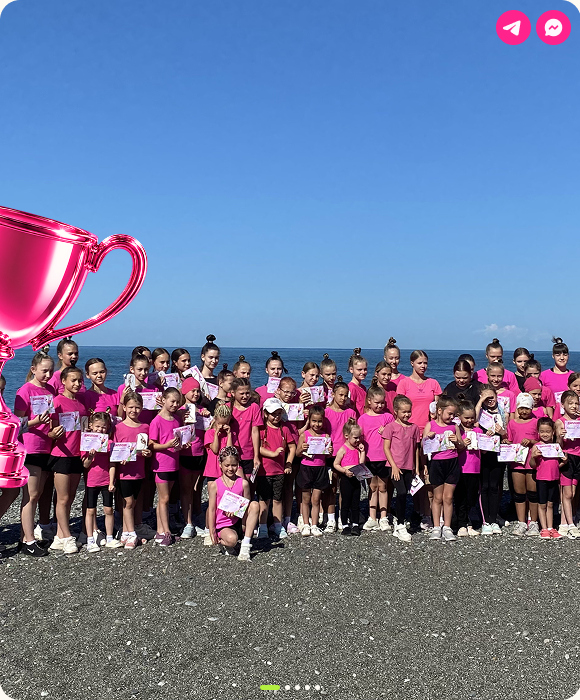
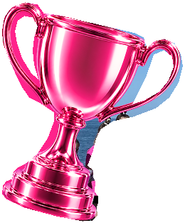
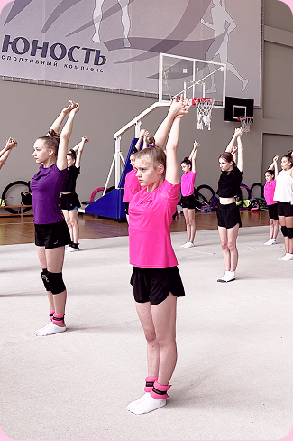
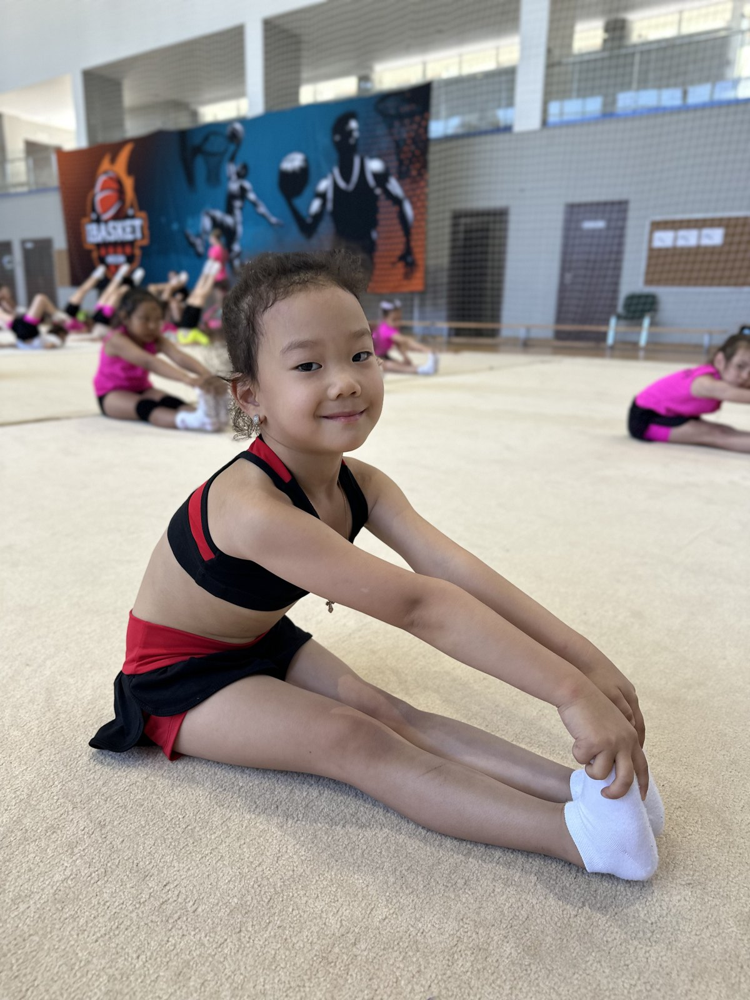
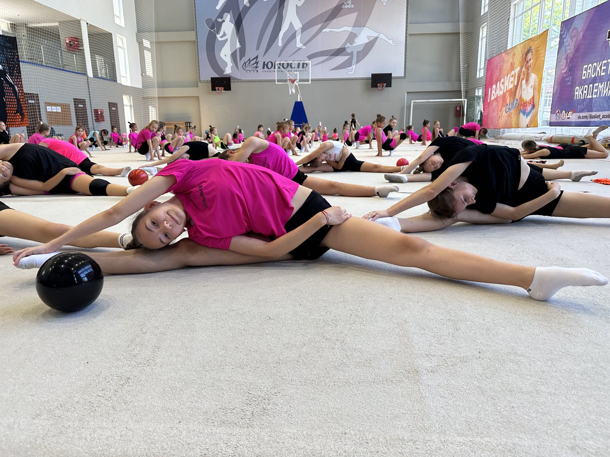
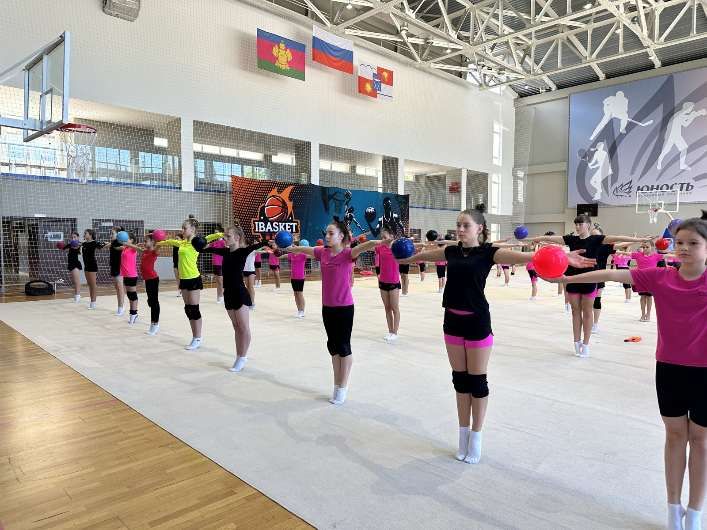
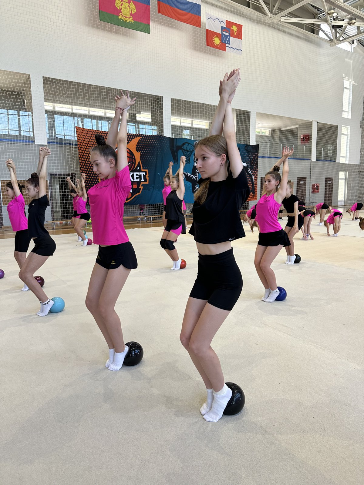

Художественная гимнастика для девочек
от 3 лет в Волгограде
Через игру, без жесткого давления и слёз помогаем
детям развивать гибкость, координацию,
красивую осанку и любовь к спорту.


[ наши преимущества ]
Развиваем любовьк спорту с детства
Тренеры—мастера спорта
Входим в федерацию
художественной гимнастики

5 филиалов по Волгограду
Бесплатное
пробное занятие
Уже 12 лет развиваем
юных гимнасток
[ филиалы ]
Ваши тренировки.
Рядом с домом.
Выберите удобную локацию в Волгограде или области. После заявки администратор поможет подобрать группу по возрасту и подготовке ребёнка.
01
02
03
04
05
06
07
08
Урюпинск
Площадка центра
пер. Дронова, 15 / Октябрьская, 20
Адрес указан по прототипу
09
10
Не знаете, какой филиал выбрать? Поможем сориентироваться.
Подобрать ближайший филиалВолгоград и область
Ближе
к вашему дому
Выберите площадку из списка —
посмотрите её адрес на карте.
[ расписание и стоимость ]
Удобное время.
Понятные условия.
Расписание и стоимость отличаются в каждом городе и филиале. Администратор подскажет актуальные условия для подходящей группы.
Стоимость
Зависит от филиала, города и расписания. Подскажем цену для вашей группы после заявки.
Расписание
Учитываем возраст, подготовку ребёнка, удобное время и свободные места.
- 01 Оставляете заявку
- 02 Администратор связывается
- 03 Вместе выбираем филиал
- 04 Приходите на пробную

[ мягкий старт ]
Начать можно
с трёх лет.
Даже если ребёнок никогда не занимался гимнастикой. На пробной познакомимся с тренером, группой и форматом занятий.
Опыт не нуженВ своём темпеДля активных и стеснительных
Не нужно заранее уметь садиться на шпагат, делать мостик или выступать. Начинаем с базовых упражнений, игр на координацию и постепенной адаптации.
Записаться на бесплатную пробнуюЗадать вопрос администратору ↗Пробуем упражнения→Знакомимся с тренером→Постепенно привыкаем→Выбираем группу
[ развитие ребёнка ]
Сильнее телом.
Увереннее в себе.
Четыре направления развития, которые соединяются на тренировках.
Физическое развитие
Гибкость, координация,
баланс и осанка.
Укрепляем мышцы и выносливость, формируем технику и постепенно осваиваем более сложные элементы.
Ребёнок увереннее чувствует себя в движении.
Спортивное развитие
От первых упражнений
к спортивным целям.
Осваиваем базу, готовимся к выступлениям и соревнованиям, формируем привычку к регулярным занятиям.
Возможность двигаться к соревнованиям и разрядам.
Характер и дисциплина
Настойчивость.
Самостоятельность.
Учимся слушать тренера, выполнять задачи, быть ответственнее и работать на результат.
Ребёнок становится более собранным.
Командная работа
В группе —
вместе и увереннее.
Учимся взаимодействовать, уважать тренера, команду и соперников, поддерживать друг друга.
Опыт общения и работы в коллективе.
[ программа занятий ]
У каждого движения —
своя задача.
Физическая подготовка, техника, хореография и работа в группе. Новые упражнения помогают сохранять интерес к занятиям.

- 01Разминка
- 02Гимнастические упражнения
- 03Хореография
- 04Игры на координацию
- 05Гибкость и растяжка
- 06Работа над осанкой
- 07Баланс
- 08Предметы и первые элементы
- 09Подготовка к выступлениям
- 10Подготовка к соревнованиям
[ спортивный путь ]
От первого упражнения
к первому старту.
При регулярных занятиях примерно через полгода ребёнок может выйти на свой первый соревновательный ковёр. Тренер учитывает подготовку и готовность ребёнка.
- 01
Пробная
Знакомимся с тренером, группой и форматом занятий.
- 02
Адаптация
Привыкаем к группе, правилам и регулярности.
- 03
База
Развиваем гибкость, координацию, баланс и осанку.
- 04
Первые элементы
Постепенно добавляем гимнастику, хореографию и предметы.
- 05
Первый ковёр
Готовимся к первому соревновательному опыту.
- 06
Новые цели
Соревнования, сборы, выезды и движение к разрядам.
[ тренеры и наставники ]
Рядом с ребёнком.
На каждом шаге.
Объяснять, поддерживать, помогать расти в своём темпе. У каждого специалиста — своя роль, опыт и направление работы.
Место для портрета
Тренер по гимнастике
Имя Фамилия
Опыт · специализация
Филиал · подтверждённые регалии
Место для портрета
Тренер младших групп
Имя Фамилия
Опыт · специализация
Филиал · подтверждённые регалии
Место для портрета
Хореограф / наставник
Имя Фамилия
Опыт · специализация
Филиал · подтверждённые регалии
Регалии, специализация и опыт показываются индивидуально. Мягкая адаптация и понятное взаимодействие важны наряду со спортивной подготовкой.
[ залы и организация ]
Пространство
для движения.
Комфортная спортивная среда и понятная организация занятий — для ребёнка и родителей.
- Подбор филиала и группы
- Понятная связь с администратором
- Постепенная адаптация к занятиям
- Условия выбранного зала уточняем перед записью

[ мотивация и события ]
Замечать старания.
Радоваться успехам.
Важны не только упражнения, но и интерес ребёнка: поддержка, общие цели, спортивные и творческие события.
ХОЧУ.
МОГУ.
ПРОБУЮ.
МОГУ.
ПРОБУЮ.
01
Спортивные события
Соревнования, сборы и выезды помогают увидеть новые цели.
02
Творческие впечатления
Фотосессии, мастер-классы и мероприятия дополняют занятия.
03
Поддержка и мотивация
Похвала за успехи, система лояльности и бонусов — детали подскажет администратор.
[ осознанный выбор ]
Что важно
при выборе центра.
Сравните программу, организацию, спортивную перспективу и возможности для вашей семьи.
| На что смотреть | ГрациЯ | Другие секции |
|---|---|---|
| География | Филиалы в Волгограде и области | Может быть одна локальная площадка |
| Спортивный путь | База, подготовка к выступлениям, соревнованиям и разрядам | Возможности зависят от программы секции |
| Профессиональная среда | Федерация и представительство Ассоциации — по прототипу | Статусы необходимо смотреть у конкретной организации |
| События | Турниры, сборы, выезды и творческие мероприятия | Формат и количество событий различаются |
| Подход | Постепенная адаптация и работа с новичками | Зависит от тренера и организации занятий |
| Мотивация | Система лояльности и бонусов | Условия каждой секции индивидуальны |
[ хореография и творчество ]
Спорт.
Грация.
Смелость проявляться.
Учимся красиво двигаться, чувствовать музыку, держать осанку и увереннее выражать себя.
Хореография, творческие мероприятия и выступления помогают соединить спортивные навыки с артистичностью.
ДвижениеМузыкаАртистичность
Прийти на пробную тренировку
[ атмосфера центра ]
Посмотрите,
как это происходит.
Живые кадры занятий: тренировки, работа в группе и первые маленькие шаги вперёд.
Видео занятий
Место для реального видео
Турниры и события
Место для фото соревнований и награждений
[ отзывы родителей ]
Истории, которые
важно услышать.
Что изменилось у ребёнка, как прошла адаптация и почему семье подошёл формат занятий.
О первом занятии
Имя родителя
Возраст ребёнка · филиал
О работе тренера
Имя родителя
Возраст ребёнка · филиал
О первых результатах
Имя родителя
Возраст ребёнка · филиал
[ набор в группы ]
Первый шаг —
попробовать.
Идёт набор девочек от 3 лет. Подберём ближайший филиал, расскажем о расписании и стоимости.
- Новичкам не нужен опыт
- Группа с учётом возраста и подготовки
- Бесплатная пробная тренировка
Можно сразу позвонить
8 (937) 087-33-39[ частые вопросы ]
Можно спросить
обо всём.
С какого возраста можно начать занятия?
Занятия подходят девочкам от 3 лет. На пробной тренировке тренер смотрит возраст, уровень подготовки, характер ребёнка и помогает мягко войти в группу.
Нужно ли ребёнку иметь опыт в гимнастике?
Нет, опыт не нужен. В «ГрациИ» занимаются как новички, так и дети, которые уже занимались спортом дома или в других секциях. Начинаем с базовых упражнений, координации, гибкости, баланса, осанки и постепенной адаптации.
Сколько стоит абонемент?
Стоимость зависит от филиала, города и расписания. Оставьте заявку — администратор подскажет актуальную цену именно для вашей группы и ближайшего филиала.
Когда будет известно расписание?
В каждом городе и филиале расписание отличается. После заявки администратор подскажет актуальные группы и удобное время занятий.
Как проходят занятия и сборы?
На занятиях дети выполняют разминку, гимнастические упражнения, хореографию, игры на координацию, работу в группе и постепенно осваивают элементы художественной гимнастики. Сборы проходят для дополнительной спортивной подготовки и развития ребёнка. Детали по ближайшим сборам администратор расскажет после заявки.
Как продвигаются к соревнованиям и разрядам?
Дети постепенно осваивают базовые навыки и правила. При регулярных занятиях примерно за полгода ребёнок может выйти на свой первый соревновательный ковёр. Дальше тренеры контролируют развитие, помогают готовиться к выступлениям, соревнованиям, сборам и спортивным разрядам.
Вдруг ребёнку не подойдёт гимнастика?
Для этого есть бесплатная пробная тренировка. Ребёнок сможет познакомиться с тренером, группой и форматом занятий, а вы — понять, комфортно ли дочке и подходит ли ей художественная гимнастика.
Все тренеры имеют МС или КМС?
В команде есть специалисты с разным опытом, спортивной подготовкой и ролями. Подтверждённые регалии, опыт и специализация указываются в индивидуальных карточках тренеров.